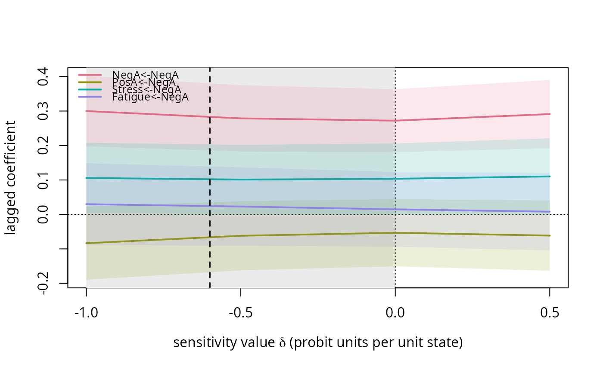
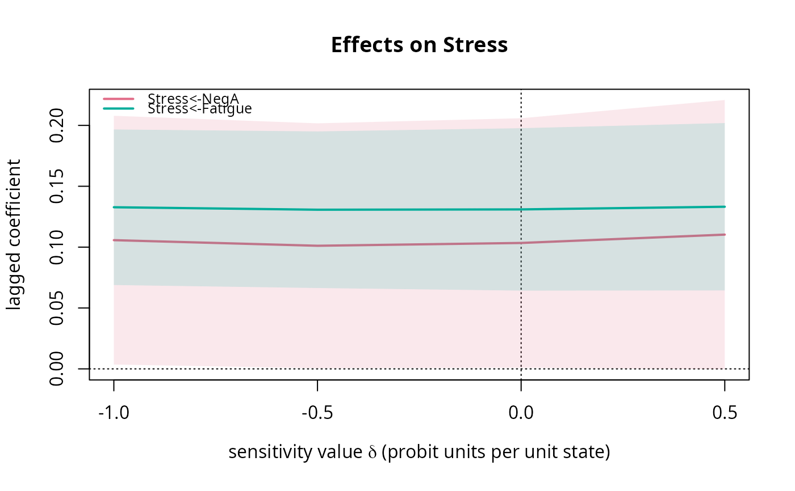

Draws the estimates of selected lagged coefficients (with confidence bands) against the sensitivity value, marks the plausible interval when supplied, and marks a calibrated value when supplied.
Usage
# S3 method for tilt_profile
plot(x, coefs = NULL, plausible = NULL, calibrated = NULL, ...)Arguments
- x
A
tilt_profile.- coefs
Character vector of coefficient names (
"Y<-X"form); default: the row of the self-censoring variable.- plausible
Optional numeric vector of length 2 (plausible interval).
- calibrated
Optional numeric value(s) to mark.
- ...
Passed to
plot.
Value
Invisibly, the data frame of plotted estimates and limits (the
rows of x$Phi for the selected coefficients). Called for its side
effect, the plot.
Examples
sim <- simulate_ema(N = 40, n_prompts = 30, motifs = "M2", delta = -1, seed = 1)
prof <- tilt_profile(sim$data, sim$vars, delta_grid = c(-1, -0.5, 0, 0.5))
# 'calibrated' marks a value such as the one returned by calibrate_delta()
plot(prof, plausible = c(-1, 0), calibrated = -0.6)

# cross-lagged effects on stress instead of the row of the self-censoring variable
plot(prof, coefs = c("Stress<-NegA", "Stress<-Fatigue"), main = "Effects on Stress")
